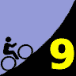

|
| Aerial photo of Mt Hamilton, courtesy of Stanford Cycling |
|  |
2007 Low-Key Hillclimbs Week 9: Mt Hamilton 22 Nov 2007 |
|
| Aerial photo of Mt Hamilton, courtesy of Stanford Cycling |
And so we return. To Hamilton. The king of them all.
As usual, we've saved the biggest for last. Mt. Hamilton, checking in at 19 miles in length with a Bay-Area-unmatched 4200 vertical climbing feet is the true test of climbing endurance.
True, the climbing is segmented into three units, although any alone would be worthy of a place in the series. But while the two descents provide relief, as much mental as physical, all too quickly the climbing begins again.
Pacing is everything. With the relatively shallow grades, and the potential advantage of a group on the descents, it is tempting to follow the wheel ahead, digging into your reserves, suppressing the alarms of the legs and the lungs. However, dig too deeply, and the gains won on the lower slopes will be collected, with interest, on the most challenging of the 3 climbs, the final 7 miles and 1800 vertical feet to the observatory.
But after the seemingly eternal climbing, after the turnoff to the observatory access road (don't miss it or we'll be seeing you in Livermore!), you'll be rewarded not only with the absolutely spectacular views from the summit, but the sense of accomplishment of a day, and a series, conquered.
In climbing, we get in touch with our bodies, our wills, our selves. For these, we give thanks on the Mountain. Can the rest of the day approach it? How many can truly understand?
Our insurance demands it: helmets are required. Sorry kids, no exceptions!
This fine Thanksgiving morning, we'll stage at the intersection of Alum Rock Road and Mt Hamilton Road in San Jose. Registration ends at 9:15 is a bright-and-early 9:30 start, giving all extra time to get home in time for Thanksgiving festivities.
| stats | climb 1: 5.90 mi, 1514 ft (4.86%) climb 2: 3.20 mi, 770 ft (4.56%) climb 3: 6.60 mi, 2060 ft (5.91%) total: 18.4 miles, 4343 ft |
| format | mass start |
| time | reg 8:30-9:20 start 9:30am |
| coordinator | |
| aerial view | Stanford Cycling |
| route profile | Roads to Ride South ACTC profile ACTC profile page |
| weather | Weather Underground Weather Bonk summit (current) |
| registration form |
PDF release form |
| entry fee | $10 free for juniors 2 free for volunteers free for coordinators |
{kind=link}